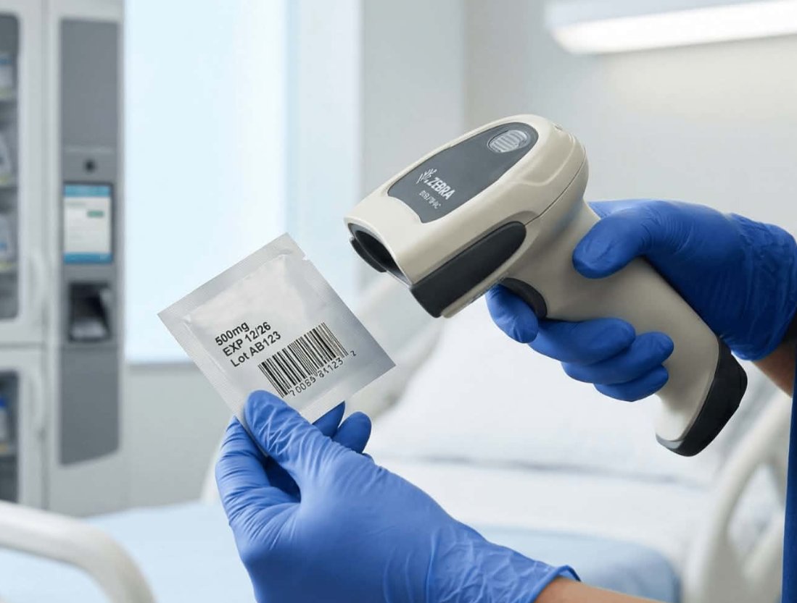

An interactive platform designed for nursing students to securely learn medication administration using Barcode Medication Administration (BCMA) setups.

Patient: Maria Santos
MRN: 2026-05-01
Allergies: Penicillin
UC envisions itself as a community of SCHOLARS aggressively INVOLVED in the pursuit of knowledge who help PRESERVE Filipino culture and values to ACT positively by training them to THINK critically and creatively.
UC's mission is to provide FUNCTIONAL knowledge and skills, dynamic INTERACTION, and LEADERSHIP in various disciplines for a better quality of LIFE.
To build premier healthcare educators producing globally responsive, scientifically advanced, ethical, and highly collaborative nursing leaders dedicated to compassionate patient safety, community wellness, and pioneering dynamic nursing research.
The nursing program is fully committed to delivering modern experiential clinical competencies, robust evidence-based healthcare integration, interactive virtual simulations, and intensive field community practice parameters to nurture top-tier clinical intelligence.
Where every nurse and student nurse is equipped with the right BCMA information, reducing preventable medication errors and building a healthcare system grounded in safety, innovation, accessibility, and a culture of lifelong learning.
We aim to provide nurses and student nurses with an accessible, interactive platform that supports the development of their BCMA skills in accurate medication administration and ward-based drug knowledge, promoting efficiency, accuracy, and safety at every point of care.
Peer reviewed articles, framework overviews, and clinical importance logs.
Studies show that leveraging automated clinical checkpoints like BCMA targets points-of-care errors effectively. It safeguards administration pathways and forces electronic matching validation protocols before any drug touches a patient.
"Barcode medication administration systems significantly reduce medication administration errors and improve overall point-of-care patient safety parameters within secondary medical wards."
— Journal of Clinical Nursing Care Quality
Step-by-step validation guide, return demonstration style procedures, and FAQ modules.
10-Step Guided Flow
Browse left or right to view every BCMA workflow stage in one horizontal line, then open any card for its detailed return demonstration popup.
Barcode Medication Administration (BCMA), is an electronic medication safety system that uses barcode scanning technology to verify the correct patient and medication before administration. It helps reduce medication errors and ensures patient safety by following the rights of medication administration.
Purpose
Equipment/Materials Needed
Rights of Medication Administration
Before administering medications, verify the:
STEP-by-STEP PROCEDURE
PREPARATION PHASE
PATIENT IDENTIFICATION AND VERIFICATION PHASE
SYSTEM VERIFICATION PHASE
MEDICATION ADMINISTRATION PHASE
DOCUMENTATION AND EVALUATION PHASE
Important Nursing Responsibilities
Showing 3 questions per page across BCMA, CDSS, and medication profile topics.
Q1: What does BCMA stand for?
A: Barcode Medication Administration - a digital safety system that uses barcodes to verify medications before giving them to patients. (Read details)
Q2: What is its main purpose?
A: To prevent medication errors, ensure patient safety, and strictly follow the 5 Rights of Medication Administration. (Read details)
Q3: What are the 5 Rights BCMA checks?
A: Right Patient, Right Drug, Right Dose, Right Route, and Right Time. (Read details)
Q4: Why is BCMA important in nursing practice?
A: Peer-reviewed studies show it reduces errors, improves documentation, and aligns with SDG 3. (Read details)
Q5: Who is this BCMA website made for?
A: Nursing students, clinical instructors, and hospital staff for learning and practice. (Read details)
Q6: How many steps are in your BCMA procedure?
A: Exactly 10 steps, from doctor's order to documentation. (Read details)
Q7: What system does the physician use?
A: CPOE or EMR is used to enter medication orders digitally. (Read details)
Q8: What happens if you scan the wrong patient?
A: The system alerts, shows a mismatch error, and blocks medication administration. (Read details)
Q9: What happens if the medication does not match the order?
A: The system rejects it, shows a warning, and will not allow administration. (Read details)
Q10: Does BCMA replace the nurse's clinical judgment?
A: No. The nurse still performs the final assessment before giving medication. (Read details)
Q: What is CDSS?
A: CDSS is an integrated computerized system that analyzes patient-specific clinical data for safer medication decisions. (Read details)
Q: How is CDSS connected to BCMA?
A: CDSS works with BCMA by continuously analyzing patient information and sending real-time alerts. (Read details)
Q: What information does the CDSS analyze?
A: It reviews allergies, medications, interactions, labs, history, vital signs, contraindications, and duplicate therapies. (Read details)
Q: How does the CDSS send alerts to the BCMA system?
A: It automatically sends real-time electronic alerts to the BCMA interface. (Read details)
Q: What kinds of problems can trigger a CDSS alert?
A: Allergy conflicts, drug interactions, unsafe doses, duplicate therapy, and other clinical risks. (Read details)
Q: Can nurses ignore the CDSS alert?
A: It depends on hospital policy and alert severity; some alerts block administration while others allow override with confirmation. (Read details)
Q: Why is CDSS important in medication administration?
A: It identifies medication-related risks before the drug reaches the patient. (Read details)
Q: What information can we see under medication?
A: The medication profile includes drug identity, classification, dosage, use, risks, and nursing responsibilities. (Read details)
Q: Are all medications available in the BCMA website?
A: No. The site only includes the Top 20 most common drugs used in selected wards. (Read details)
Q: Which medications are included?
A: The Top 20 most common drugs in the Medical, Pediatric, Surgical, and OB-GYN wards. (Read details)
Q: Is all information of the included drugs complete in the website?
A: Yes. All listed medication profile details are fully provided on the website. (Read details)
Page 1 of 7
Common ways on how to trouble shoot BCMA during errors
Auto-Loop Troubleshooting Guide
This carousel moves to the right every 2 seconds, loops continuously, and can still be controlled manually using the left and right buttons.
Drug studies spanning the top 20 most frequent cross-matched clinical ward medications.
Top 20 medications: Antibiotics, Antihypertensives, etc.
Top 20 medications: Precise pediatric weight-dosed syrups.
Top 20 medications: Post-op analgesics, anesthesia blocks.
Top 20 medications: Uteronic agents, lactation compounds.
Multi-branch clinical scenario testing playground for medication matching routines.
1. Verify Patient Branch
2. Scan Med Logic
3. Handle Exception Alert
4. Execution Path
5. Writeback Database
Disclaimer: This stimulation is a work of fiction. Any names, characters, events, or incidents portrayed are purely fiction. Any similarity to the stimulation are purely coincidental and do not represent real life individuals or situations. Viewer discretion is advised.
Connecting digital health verification engineering with planetary sustainability objectives.
The Scan2BSafe engine explicitly links up with **UN Sustainable Development Goal 3 (Target 3.8)**. By training next-generation healthcare providers inside an error-proofed, risk-free digital platform, we proactively contribute to eliminating systemic clinical error chains, raising public hospital care quality, and guaranteeing continuous patient safety parameters.
3 pages with 6 cards each page placeholder grid
Direct jump gateway to the main peer-reviewed verification literature section.
Direct jump gateway to return-demonstration guides and tracking metrics.
Direct jump gateway to localized laser gun hardware override steps.
Direct jump gateway to the 4 key clinical hospital ward lists.
Direct jump gateway to launch active branch simulation modules.
Direct jump gateway to global healthcare safety targets.
Dynamic Content Slot 7
Dynamic Content Slot 8
Dynamic Content Slot 9
Dynamic Content Slot 10
Dynamic Content Slot 11
Dynamic Content Slot 12
Dynamic Content Slot 13
Dynamic Content Slot 14
Dynamic Content Slot 15
Dynamic Content Slot 16
Dynamic Content Slot 17
Dynamic Content Slot 18